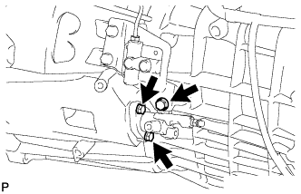

CLUTCH RELEASE CYLINDER > REMOVAL |
| 1. DRAIN CLUTCH FLUID |
| 2. REMOVE NO. 1 CLUTCH HOUSING COVER |
 |
Remove the 3 bolts and housing cover.
| 3. REMOVE CLUTCH RELEASE CYLINDER TO ACCUMULATOR TUBE |
 |
Using a union nut wrench, disconnect the tube.
Remove the bolt and tube.
| 4. REMOVE CLUTCH RELEASE CYLINDER ASSEMBLY |
 |
Remove the 3 bolts and pull out the clutch release cylinder.